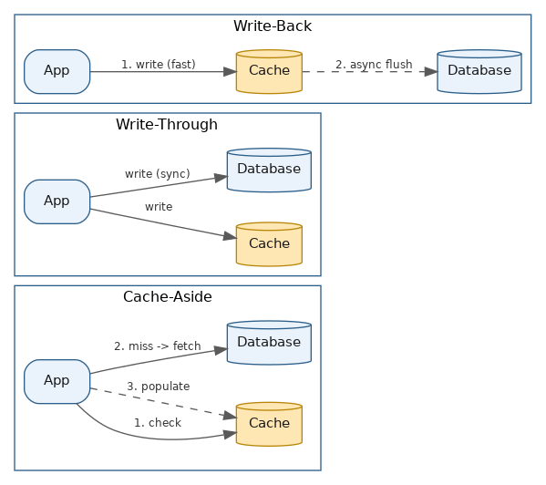
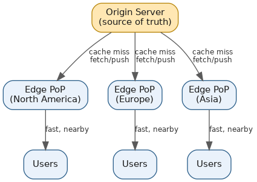
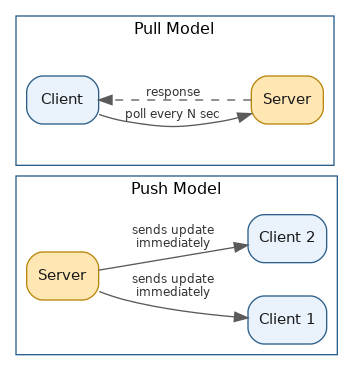

Caching & CDN
Table of Contents
- Overview
- Introduction to Caching
- Why is Caching Important?
- Types of Caching
- Cache Replacement Policies
- Cache Invalidation
- Cache Read Strategies
- Cache Coherence and Consistency Models
- Caching Challenges
- Cache Performance Metrics
- What is CDN?
- Origin Server vs. Edge Server
- CDN Architecture
- Push CDN vs. Pull CDN
- Common Interview Questions
- Key Takeaways
Overview
Caching and Content Delivery Networks solve the same underlying problem from two different angles: expensive work and long network distances both slow a system down, and both can be avoided by keeping a copy of the answer somewhere closer and faster than the original source. Caching keeps a copy of data in a fast layer (memory, an edge server, a browser) so it doesn't have to be recomputed or re-fetched from a slower system every time it's needed. A CDN takes that same idea and applies it geographically, pushing copies of content out to servers physically near the people requesting it. Because caching and CDNs are two of the most heavily tested performance topics in system design interviews, it's worth understanding not just what they do, but the failure modes (staleness, stampedes, cold starts) that come along with them.
This page covers caching end-to-end — why it matters, where it lives, how entries get evicted and invalidated, and how reads and writes actually interact with a cache — and then moves into CDNs: the origin/edge relationship, how a CDN routes and serves requests, and the push-vs-pull models for getting content onto the edge in the first place. The site's System Design — Building Units section also has a dedicated page on caching strategies (see ../system-design-building-units/caching-strategies.html) that focuses more narrowly on cache-aside, write-through, and write-back as reusable building blocks; this page treats caching and CDN as a complete topic in their own right.
Introduction to Caching
At its core, caching means saving the result of expensive work the first time it's produced and reusing that saved copy for later requests, instead of redoing the work every single time. A cache is a temporary, fast storage layer sitting between a client and the slower "real" source of data, holding copies of whatever is being requested frequently or recently so it can be handed back quickly.
Caching works so well because of a principle called locality of reference: in almost any real system, a small slice of the data gets requested vastly more often than the rest of it. A news site's top headline might be read by millions of people while a three-year-old article is read by almost nobody — so instead of hitting the database for that headline every time, the system fetches it once, stores it in a cache, and serves every subsequent request straight from there. Caches show up everywhere, from tiny CPU caches inside a processor, to a browser caching images and scripts, to large distributed caches like Redis sitting in front of a database. In every case the same trade-off applies: the cache is smaller and faster than the source of truth, so there's a constant balance between how much can be cached, how fresh it needs to stay, and how much speed is gained in exchange.
Why is Caching Important?
The most immediate benefit is raw speed — reading from memory beats reading from disk, and reading from a local cache beats a network round trip to a remote server, which directly translates into snappier pages and faster responses. The gains compound quickly: pushing a cache's hit rate from 90% to 99% can more than halve average latency, without touching any hardware at all.
Beyond speed, caching takes load off the backend systems that would otherwise repeat the same expensive work over and over. A database that would collapse under a million identical reads per second can instead serve almost all of them from cache and only deal with occasional misses — meaning the same traffic can be handled with far less hardware, and spikes that would otherwise be fatal become survivable. That in turn lowers infrastructure cost, since serving from cache is far cheaper than repeatedly running queries, computations, or third-party API calls. Finally, caching improves resilience: when popular content is cached at several layers at once (browser, CDN, application, database), a traffic burst can be absorbed at whichever layer it hits first, instead of cascading all the way down to the most fragile, expensive layer — which is exactly why virtually every high-traffic product, from Amazon's product pages to Netflix's streams, caches aggressively at multiple levels rather than serving everything fresh.
Types of Caching
Caching happens at nearly every layer of a system, and each layer serves a slightly different purpose:
- Browser cache — a browser stores images, CSS, and JavaScript locally after the first visit, so revisiting the site (or another page on it) doesn't mean re-downloading everything.
- CDN cache — static assets (images, video, stylesheets) are cached on geographically distributed edge servers (Cloudflare, Akamai, Fastly, CloudFront) so users are served from somewhere nearby rather than from a distant origin. This is covered in depth later on this page.
- Application-level (in-memory) cache — data cached directly inside the running application process's own memory, making access extremely fast since there's no network hop — though it's limited to one server instance and disappears on restart.
- Distributed cache — a dedicated caching tier running across multiple servers as one logical cache, commonly Redis or Memcached, letting many application servers share the same cached data and scale the cache independently of the app tier.
- Database cache — the buffer pools and query caches databases keep internally, holding frequently accessed pages in memory so repeated reads don't always hit disk.
- HTTP / reverse-proxy cache — a reverse proxy like Varnish sits in front of a web server and caches whole HTTP responses, so repeat requests for the same page never even reach the application.
Cache Replacement Policies
Because a cache is almost always smaller than the full dataset it could hold, it eventually fills up, and something has to be evicted to make room. The rule governing that decision is a cache replacement (or eviction) policy:
- LRU (Least Recently Used) — evicts whatever hasn't been touched for the longest time. By far the most common policy in practice (the default in Redis), because recently accessed data tends to be accessed again soon.
- LFU (Least Frequently Used) — evicts the item with the lowest total access count, tracked via a per-item counter. Works well when popularity is stable over long periods, but can suffer "cache pollution" when something that was hugely popular once keeps a high counter long after it stopped mattering.
- FIFO (First In, First Out) — evicts whatever arrived first, regardless of how often or recently it's used. Simple, but can evict something still in heavy use just because it arrived earliest.
- MRU (Most Recently Used) — the opposite of LRU, evicting whatever was just used. Counterintuitive, but useful for access patterns like a single sequential scan through a huge dataset, where the item just touched is unlikely to be needed again soon.
LRU (or a close, cheaper approximation of it) dominates real systems; LFU is reserved for more specialized cases where frequency matters more than recency.
Cache Invalidation
There's an old joke that computer science has only two hard problems: cache invalidation and naming things. It's genuinely hard because a cache only helps if it eventually reflects changes to the underlying data — otherwise users see stale or wrong information indefinitely.
The simplest, most widely used approach is TTL (Time To Live) expiration: every cached item carries an expiration timestamp, and once it passes, the item is treated as stale and refreshed or removed on the next request (this is how the Cache-Control and Expires HTTP headers work). It's easy to implement, but picking the duration is a trade-off — too short and you lose most of the caching benefit, too long and users see outdated data for longer than acceptable.
When staleness truly can't be tolerated, systems use manual or event-driven invalidation — explicitly clearing or updating a specific entry the instant the underlying data changes, either via a direct "purge this now" API call or automatically in response to an event (e.g., a "product updated" message clearing that product's cache entry). Some CDNs also support tag-based invalidation, purging a whole group of related entries at once. A more advanced technique, stale-while-revalidate, serves the old cached value immediately for speed while quietly fetching a fresh copy in the background for the next request. Choosing an invalidation strategy ultimately comes down to how much staleness the application can tolerate versus how much complexity you're willing to take on to stay perfectly fresh.
Cache Read Strategies
Separate from eviction and invalidation is the question of how the cache and the underlying data source interact on reads and writes:
- Cache-aside (lazy loading) — the application manages the cache itself: on a read it checks the cache first; on a hit, it returns the cached value; on a miss, it fetches from the database, populates the cache, and returns the result. This is the most common and flexible pattern (typically Redis or Memcached alongside a traditional database), though every reader has to implement the "check cache, then fall back to DB" logic itself.
- Read-through cache — similar in spirit, but the cache itself (not the application) fetches from the database on a miss, so the application always just talks to the cache.
- Write-through — every write goes to the cache and is synchronously also written to the database, keeping the two in sync at all times, at the cost of slightly slower writes since each has to wait on both operations.
- Write-back (write-behind) — writes land in the cache and are considered "done" immediately, while the database update happens asynchronously in the background. Writes are very fast, but if the cache crashes before the background write completes, that update can be lost.
- Write-around — writes go straight to the database, bypassing the cache entirely; the cache only fills in later when that data happens to be read. This avoids filling the cache with data that may never be re-read, which suits write-heavy workloads.
The right choice depends on the workload: read-heavy systems with data that doesn't change much tend to favor cache-aside or read-through, while write-heavy systems favor write-back or write-around so the cache isn't clogged with data that's rarely reused.

Cache Coherence and Consistency Models
Once caching happens at multiple layers, or across multiple nodes in a distributed cache, a new problem shows up: keeping all of those copies in agreement. Cache coherence is about ensuring that when one cached copy is updated, other cached copies of the same data eventually reflect the change rather than silently serving an old version forever. Consistency is the closely related question of exactly what guarantees the system makes about when and in what order those updates become visible.
Strong (strict) consistency guarantees that any read immediately following a write sees that write everywhere in the system — the easiest model to reason about, but the hardest and most expensive to implement at scale, since it usually requires coordinating across nodes before confirming a read or write. Eventual consistency relaxes that guarantee: after a write, all copies will eventually converge, but there may be a brief window where different nodes return slightly stale answers. Many large-scale caches and databases favor eventual consistency because it buys much better performance and availability, and plenty of real use cases (a "like" count off by a few for a couple of seconds) tolerate it fine.
A common mechanism for maintaining coherence is the invalidation protocol, where updating data triggers invalidation messages to other caches holding a copy, telling them to discard or refresh it. More centralized designs use a directory-based approach, tracking exactly which caches hold which data so invalidation messages can be targeted rather than broadcast everywhere. This strong-vs-eventual trade-off is one of the most important building blocks in system design, and it resurfaces constantly in discussions of distributed databases, multi-region deployments, and caching layers alike.
Caching Challenges
Caching is enormously beneficial, but it introduces its own failure modes. The best known is the cache stampede (or thundering herd problem): when a popular cached item expires, or the cache is flushed or restarted (a "cold start"), many concurrent requests can hit a miss at nearly the same instant and all rush to the database to regenerate the same data simultaneously — turning one expected query into thousands and potentially cascading into a broader failure, caused ironically by the very mechanism meant to protect the system. Common fixes are request coalescing or locking (only one request regenerates the data while the rest wait and then read the fresh result) and jittering TTLs slightly so related entries don't all expire at the same instant.
Other notable challenges include cache penetration, where requests repeatedly ask for data that doesn't exist at all, so it can never be cached and every request falls all the way through to the database (mitigated by caching "doesn't exist" markers or using a Bloom filter to check existence quickly), and cache pollution, where infrequently useful data crowds out genuinely valuable data and hurts the hit rate for everyone. Underneath all of this sits the fundamental staleness-versus-freshness tension already discussed under invalidation — any caching strategy means accepting the data could be at least momentarily out of date, and different applications tolerate that very differently (a stock ticker needs near-real-time freshness; a "related articles" list can be a day old).
Cache Performance Metrics
The most fundamental metric is the cache hit ratio — the percentage of requests served successfully from the cache (hits divided by hits plus misses); its complement is the miss rate. A hit ratio above roughly 80% is generally healthy for many applications, while caches for very stable static assets (images, JS served via a CDN) are often expected to reach 95–99%.
Hit ratio alone doesn't tell the whole story — it has to be weighed against the cost of a miss. If a miss only adds 10–20ms (a fast fallback query), a 5% miss rate is fine; if a miss triggers an operation costing 500ms or more, that same 5% miss rate can be a serious problem, and the system might need a 99.5%+ hit rate to keep latency acceptable. This is sometimes captured as a "weighted miss cost" — miss rate multiplied by the average latency penalty of a miss — which reflects real user-facing impact more honestly than hit ratio alone. Other important metrics include latency itself (average and tail — p95/p99), eviction rate (how often items get kicked out due to capacity, a signal the cache may be undersized), and memory/resource utilization. Tracking all of these together, rather than fixating on hit ratio alone, gives a much clearer picture of whether a caching layer is genuinely helping or quietly becoming its own bottleneck.
What is CDN?
A CDN (Content Delivery Network) is a geographically distributed network of servers that work together to deliver content — images, video, stylesheets, scripts, and increasingly dynamic content — to users faster and more reliably than a single, centrally located server could manage alone. The insight is simple: the farther data physically travels, and the more network hops it crosses, the longer it takes and the more chances there are for delay or loss. Placing copies of content on servers scattered around the world, close to where users actually are, cuts that travel distance dramatically for most requests.
Major real-world providers include Cloudflare, Akamai (one of the original CDN companies, founded in the late 1990s), Fastly, and Amazon CloudFront; many large companies also run substantial custom CDN-like infrastructure of their own. These networks operate hundreds to well over a thousand data centers — Points of Presence, or PoPs — worldwide, and route each incoming request to whichever PoP can serve it fastest, usually the nearest one with healthy capacity. Beyond speed, CDNs absorb huge traffic spikes (a product launch, a viral moment) without overwhelming the origin, improve reliability by spreading load across many redundant servers instead of one single point of failure, and provide meaningful DDoS protection, since attack traffic gets spread and absorbed across the distributed network rather than slamming a single origin. That combination of speed, resilience, and security is why virtually every major website or streaming service relies on a CDN as core infrastructure.
Origin Server vs. Edge Server
Every CDN setup revolves around two kinds of servers. The origin server is the original, authoritative source of the content — where the application actually stores its true master copy, whether that's a web server, a media store holding video files, or a database backing a catalog. If nothing were cached anywhere, every request would have to travel all the way to this one server regardless of distance, meaning slower load times for distant users and load concentrated in one place.
Edge servers are the distributed servers that make up the actual body of the CDN, positioned in many locations closer to end users. Their job is to hold cached copies of content pulled (or pushed) from the origin and serve it directly to nearby users without ever reaching the origin. When an edge server already has fresh content cached (a "cache hit"), it responds almost instantly; when it doesn't, or the copy has expired (a "cache miss"), it reaches back to the origin, serves the fresh copy, and stores it locally for next time. This means edge servers act as a protective buffer: because most requests for popular content are served entirely from the edge, the origin only has to handle a small fraction of traffic — cache misses, unpopular content, and genuinely dynamic work like logins or transactions — freeing it up for the harder jobs.
CDN Architecture
A CDN's architecture is a distributed network of edge servers grouped into Points of Presence (PoPs) spread across many cities and regions, working with the origin infrastructure and a routing layer that decides which PoP handles each request. Each PoP typically holds multiple edge servers plus local storage for cached content, and large providers may run well over a thousand PoPs globally so content is never too far from any user.
The routing layer typically combines a couple of techniques. DNS-based routing is often the first step: when a domain points to the CDN rather than directly to the origin, the CDN's own DNS infrastructure returns the address of whichever PoP suits that user best, based on geography, server health, and real-time load. Many CDNs also layer on anycast, broadcasting the same IP address from many physical locations simultaneously and letting BGP (the underlying internet routing protocol) automatically steer each user to the "closest" location in network terms — this also gives very fast automatic failover, since if one location goes down, BGP simply stops routing there within milliseconds, without waiting on DNS caches around the internet to expire.
A typical request's journey: the user's device resolves the domain (via DNS or anycast) to a nearby edge server; that server checks whether it has a valid, unexpired cached copy; if so, it serves it directly; if not, it fetches from the origin (or from a middle-tier "shield" cache some CDNs use to reduce direct load on the origin), caches a copy locally, and serves the user. Many modern CDNs have expanded well beyond static file caching into edge compute — letting small pieces of application logic (A/B testing, authentication checks, image resizing) run directly on the edge without a round trip back to the origin at all.

Push CDN vs. Pull CDN
There are two fundamentally different models for how content actually lands on CDN edge servers in the first place, and the choice has real practical consequences for how a site manages its content.
With a push CDN, the content owner takes an active role: whenever new or updated content is ready, it's deliberately uploaded ("pushed") to the CDN's servers ahead of time, before any user requests it. This gives the owner direct control over exactly what's cached and for how long, and it means even the very first user anywhere gets the content served instantly from a nearby edge server with no initial-fetch delay. The trade-off is more active management effort, which suits sites with a relatively stable, well-defined content set or lower overall traffic.
With a pull CDN, the model flips: the CDN holds nothing until a user actually asks for it. The first request for any piece of content anywhere hits a cache miss, the edge server fetches it from the origin, and caches it locally for subsequent requests from that region. This requires far less manual effort (the CDN manages itself based on real demand) and is more storage-efficient, since content nobody requests in a region is never cached there — at the cost of the very first request in each region being a bit slower. In practice, pull CDN is by far the more common model for large, high-traffic, frequently changing content libraries (Cloudflare and CloudFront default to it), while push CDNs are reserved for smaller, stable, low-traffic sites or cases needing tight, deliberate control — like releasing a software update to all regions simultaneously at a precise moment.
| Aspect | Push CDN | Pull CDN |
|---|---|---|
| How content gets to edge | Owner uploads content in advance | CDN fetches automatically on first request (cache miss) |
| First-request latency | Fast (already pre-positioned) | Slower (fetched from origin, then cached) |
| Management effort | Higher (owner manages uploads/updates) | Lower (self-managing based on demand) |
| Storage efficiency | Lower (content stored everywhere, even unused) | Higher (only requested content is cached per region) |
| Best suited for | Small, stable, low-traffic sites; controlled rollouts | Large, high-traffic, frequently changing content |
